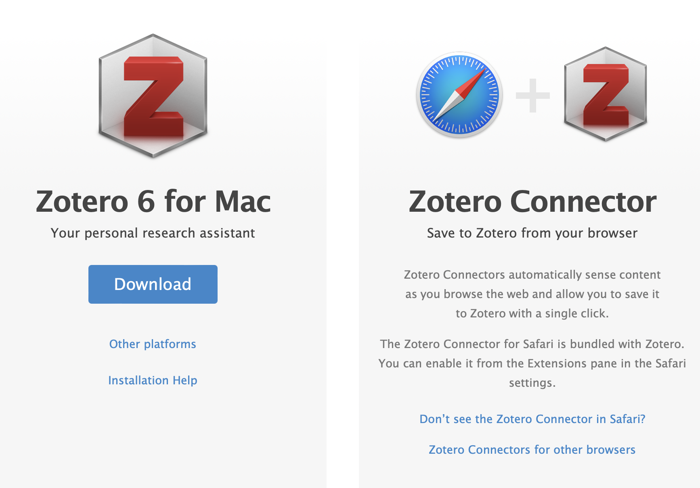
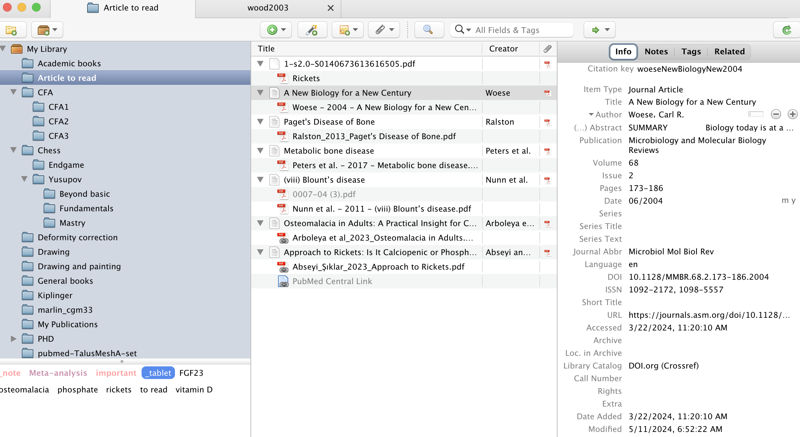
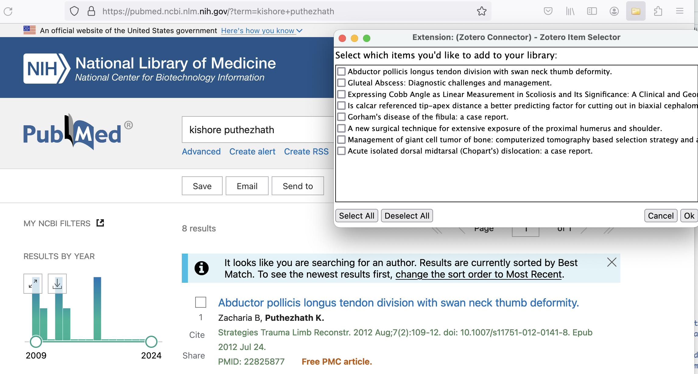
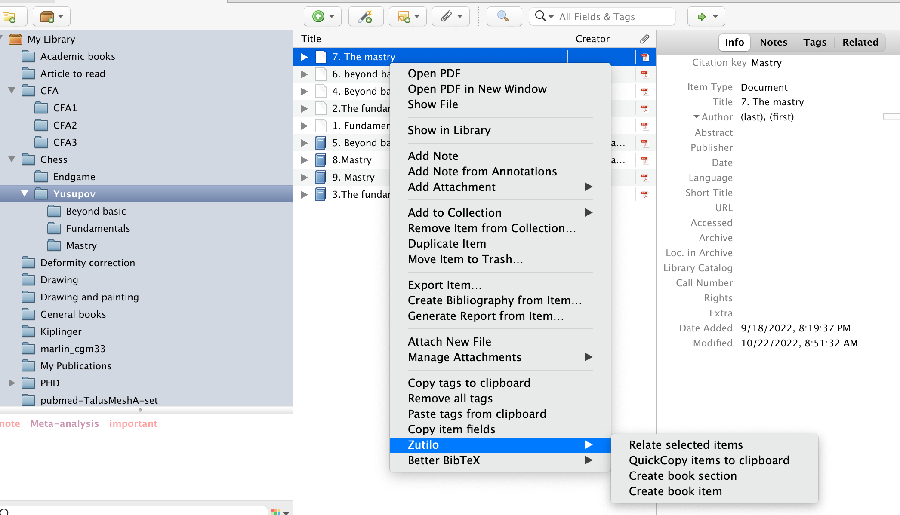
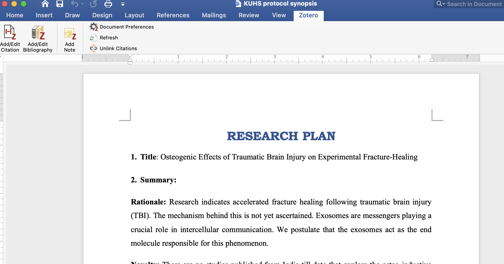
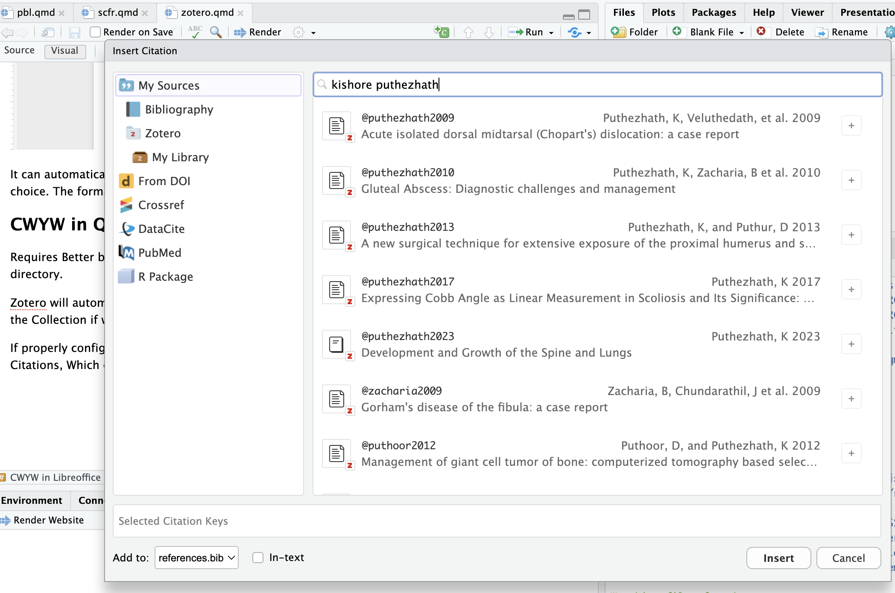
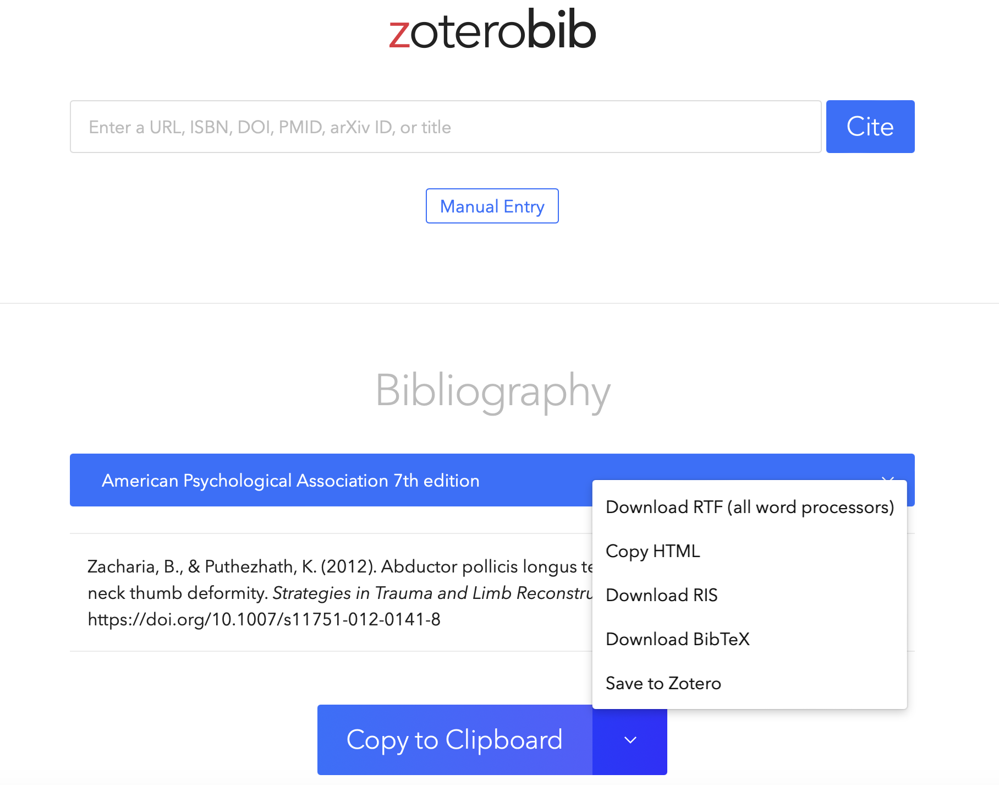

Zotero
to master
cwyw and formatting bibliography are deterrents to the flow of manuscript writing and this can be a painful exercise if done manually. While several commercial cwyw softwares are available, zotero is not only free and open source, it is an exceptional scribe for academic work.
It can be reached via ZOTERO OFFICIAL WEBSITE
Installation

It comes with 2 pieces of software
zotero 6 for mac desktop
zotero connector for browser 1
After successful installation, you are good to go
Zotero 6 desktop app

It has got 3 colums
First column
Shows the collections under the main folder My Library. We can add new collections by clicking on the folder icon. Subcollectins can be added by right clicking the collection.
Second column
Shows the individual citations, retrieved pdfs and notes
Third column
Shows
info, information about the selected citation
Notes
Tags
Related items
Uses
helps to
Retrieve citations and associated pdf full texts
Organise them to Collections
tag them for retrieval
Read and annotate PDFs
Retrieve annotations as notes
CWYW
Add bibliography
Format bibliography
Citations, 3 methods
Extension for Firefox sending citations to desktop Collection

The curser shows the zotero extension. Click on the same Drag & drop to zotero desktop app from computer file
Add as a .ris file, downloaded from repositories.
Zotero desktop will automatically fetch pdfs if available online
ORGANISATION
Collections
tags
Related items
they are building block for zotero library. Can be used together or separately.
zutilo extension

This extension helps to add improved work flow for creating tags and related items
Reading & annotation
Zotero has got a native pdf reader which can be annotated . The annotations can be retrieved as notes which can be utilised for creating manuscripts.
zotfile extension
This extension helps to create an excellent workflow, if a tablet or similar device is used for reading. Zotfile if properly configured, can send files to the tablet, via a cloud service of our choice, and retrieve it back after annotation. It can also automatically extract those annotations made in the pdf with the tablet in to a separate folder.
CWYW
The main attraction.
CWYW in Libreoffice / MS word
Zotero has extensions for these word processors. After installing the extension, Zotero can cite in text using the articles / books stored on the Collection.

The extension will be added to the ribbon. It has got 3 main options
add/edit citation
add/edit bibliography
add note
Other functionality include document preference where we can modify the citation style

It can automatically format and insert a list of bibliography with the style of our choice. The format can be easily modified with a single click of button.
CWYW in Quarto
Requires Better bibtex extension and the .bib file should be placed in the parent directory.
Zotero will automatically update the .bib file every time a new Citation is added to the Collection if we select auto update, during the first export of .bib file.
If properly configured, @ Command or clicking on the insert: citations in quarto will open the window with all the Citations, Which can be searched and inserted.

Zoterobib

It is a web based citation and bibliography service by the zotero team. It is free and add free. If we are working on a public computer, it can be used to collect bibliography which can be downloaded in different formats
Footnotes
Zotero extension for Safari does not work properly.↩︎